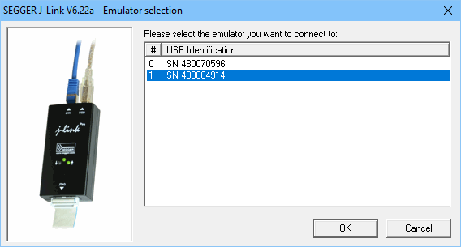
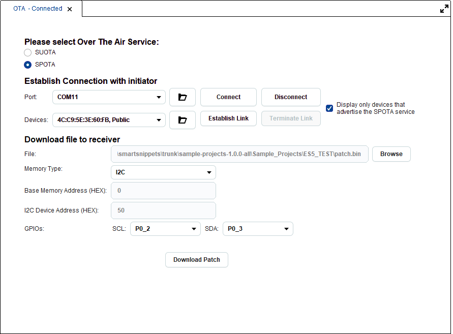
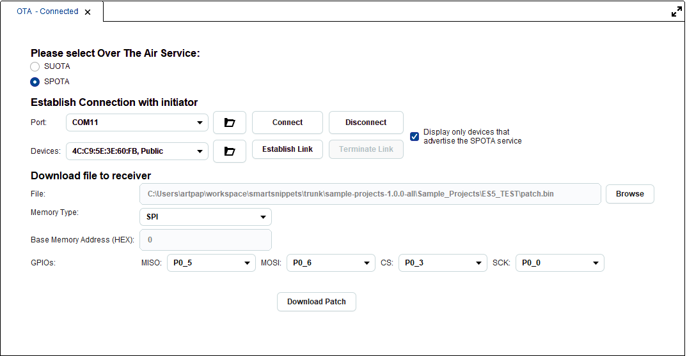
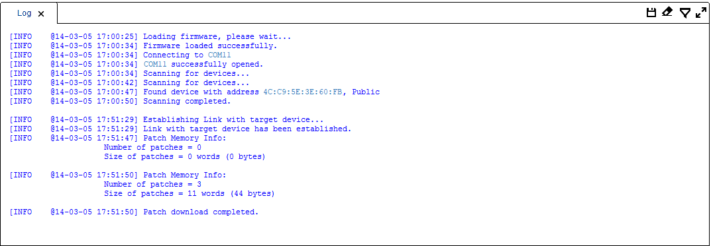

3.9. OTA Services (over the air services)¶
Note
This tool applies to DA14580/581/583 chip family only.
The user can select between two over the air services: SPOTA (Software Patch Over The Air) and SUOTA (Software Update Over The Air). By default SUOTA is selected.
3.9.1. Software patch over the air (SPOTA)¶
Note
This tool applies to DA14580/581/583 chip family only.
Software patch over the air (SPOTA) service exposes a control point to allow a peer device initiate software patching over the air. The DA14580/581/583 chips are capable of executing SW patches that vary regarding the target device to be amended as well as the level of changes to be implemented. A patch can just change a single SW variable value in the code which resides in the SRAM. It can also change an instruction or data value read from the ROM used for the protocol realization. Furthermore, a patch can generate an exception and guide the Program Counter to a new function bypassing the existing one.
SPOTA defines 2 roles:
- The “SPOTA Initiator” is the endpoint which transmits the patch payload
- The “SPOTA Receiver” is the endpoint which receives and applies the patch payload
Patching code is sent by the Initiator using the Bluetooth Smart link. Receiver stores the patch into the internal RAM or an external non-volatile memory and then applies the patch. SPOTA is instantiated as a Primary Service. There is only one instance of this service on a device.
Figure 53 Software patch over the air (SPOTA)
3.9.1.1. Patch Download Procedure¶
Open SmartSnippets™ Studio and plug in the development board, which will act as receiver and the initiator, which could be a USB dongle. Write down which ports are assigned for each device. Let’s assume that development board has COM14, COM15 and the initiator occupies the COM31 port.
Select the “SPOTA/SUOTA” group menu. Three tabs are now active “Booter”, “OTA” and “Log”
On the “Booter” tab select an appropriate SPOTA firmware and press “download” to download it to the development board. Press reset if asked.
On the “OTA” tab select “SPOTA” on “Over the Air Service”
On “Establish connection” on “Port” select the initiator COM port and press “Connect”. The user can use the (Refresh) icon in order to refresh the respective drop down list.
The “Emulator selection” window pops up. Select the initiator JTAG number (Figure 54). In case of dongle, this number is written on the dongle device.
Figure 54 SPOTA Emulator selection
The initiator is scanning for devices and it should find all the devices that run an advertising firmware. If the checkbox “Display only devices that advertise the SPOTA service” is selected only the devices which advertise a SPOTA service are shown. All these devices are listed in the “Devices” combobox. One of these devices is our development board mentioned above.
On the “Devices” combobox select the development kit Bluetooth address and press “Establish Link”. If successful the “Establish Link” button is disabled and a message “Link with target device has been established.” is shown on the log.
In “File” user selects the patch file to download.
In “Memory Type” user selects where the patch should be written.
If selection is “SYSTEM_RAM” or “RETENSION_RAM” no further information is asked.
If selection is “I2C” (EEPROM Memory) user should enter “Base Memory Address”, “I2C Device address”, “SCL” and “SDA” (Figure 55).
Figure 55 SPOTA I2C options
- If selection is “SPI” (Flash Memory) user should enter “Base Memory Address”, “MISO”, “MOSI”, “CS” and “SCK” (Figure 56).
Figure 56 SPOTA SPI options
User presses the “Download” button. The maximum transfer unit (MTU) over the Bluetooth Smart Link is 20 bytes, so the patch file is divided and transmitted in packets of size 20 bytes (maximum).
When patch downloads successfully the message “Patch download completed successfully.” is shown in the log and the number of patches in memory increases (Figure 57)
Figure 57 SPOTA Patch Download
At any point, user may terminate an established link between the initiator and the receiver, by pressing the “Terminate Link” button.
The “Disconnect” button closes the port with the initiator.
3.9.2. Software update over the air (SUOTA)¶
Note
This tool applies to DA14580/581/583 chip family only.
Similarly to SPOTA, SUOTA refers to a software update that is distributed over Bluetooth Smart link. This functionality can be achieved by using the SUOTA service, which is based on the SPOTA service that has been already described. SUOTA also defines two roles:
The “SUOTA Initiator” that transmits the new software image
The “SUOTA Receiver” that is responsible for:
- Receiving a new software image that is sent by the Initiator over the Bluetooth Smart link.
- Validating the new image and send informative status updates to the Initiator.
- Storing the new image into an external non-volatile memory (FLASH/EEPROM device)
- Configuring the bootloader to run the new image.
Figure 58 Software update over the air (SUOTA)
Unlike SPOTA, SUOTA applies only to devices that have an external FLASH or EEPROM memory. Additionally, SUOTA transmits the image file in blocks. The user is able to specify the block size in bytes. Each block will in turn be divided in 20 byte packets, so the block size cannot be less than 20 bytes. Image bank field specifies where and which image file will be loaded. It accepts only 3 values: 0, 1 or 2
0: Update external memory with the oldest image. 1: Put image in bank no. 1, as specified in product header. 2: Put image in bank no. 2, as specified in product header.
Figure 59 SUOTA Image Update
After a successful image update, suota receiver reboots the target device and the connection to it is lost. User has to download again the suota receiver firmware via the Booter tool, and press the Connect button at the OTA services tool in order to discover again the device. If the user tries to download the same firmware file twice, an error like the following will appear:
Figure 60 Error on downloading the same firmware file twice